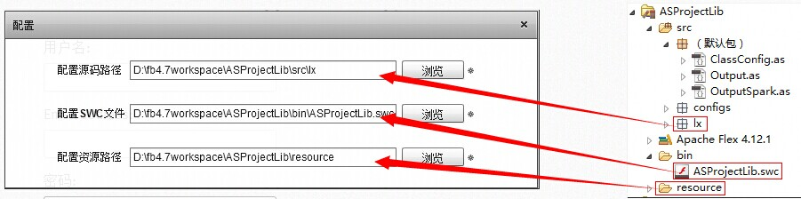
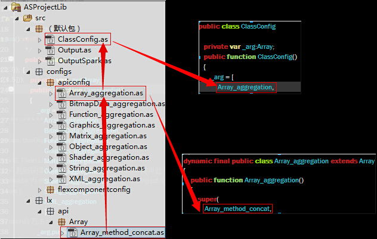
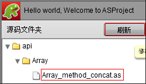

ASProjectLib当前版本v1.0.0，使用Flex SDK 4.12.1编译，使用AIR SDK13.0
项目捐赠：
1.Alipay账户：lxtobe5@qq.com to www.alipay.com
2.Paypal账户：lxtobe5@gmail.com to www.paypal.com
|
ASProject当前版本v1.0.0 ASProjectLib当前版本v1.0.0，使用Flex SDK 4.12.1编译，使用AIR SDK13.0 项目捐赠： 1.Alipay账户：lxtobe5@qq.com to www.alipay.com 2.Paypal账户：lxtobe5@gmail.com to www.paypal.com |
这是一个ActionScript3项目,目的为实例整理和展示，就像TourDeFlex一样，但拥有更多的自由度，做更好的开发者伴侣，实例来源于网络和个人编写，下载ASProjectLib，在本地修改增加实例，更加欢迎分享你的源码实例，联系我lxtobe5@gmail.com.
1.下载并安装ASProject.exe(Win8用户不要安装在系统盘，以防止文件和文件夹权限干扰正常使用)
2.下载ASProjectLib，这是一个Flex库项目，导入到Flash Builder中，注意使用Flex SDK和AIR SDK的版本和介绍一致

3.打开ASProject.exe，选择你需要的语言版本（English/中文），开始配置项目

4.初次使用，点击看看，双击API目录下的实例，会链接到对应的API在线

5.扩展规则(ASProjectLib)
仅对于API包，按照简单的命名规则创建新的实例文件，方法请用method作为中间名，属性请用attribute作为中间名，继承类Output，覆写run和dispose方法，完成后，在包config.apiconfig增加XXX_aggregation（继承了Array），添加刚才的类名，最后在ClassConfig类中添加XXX_aggregation。在Flash Builder中完成刚才添加或修改文件的编译工作，回到ASProject软件中，点击刷新按钮，就能看到你刚刚的工作成果了。


对于flexcomponent包的组件实例，实例继承OutputSpark，方法与上面类似。
6.关于实例编写
继承Output的类，可覆写run和dispose方法，输出文字用traceString方法，显示图形用tracePattern方法
继承OutputSpark的类，可覆写run和dispose方法，仅输出文字用到traceString方法